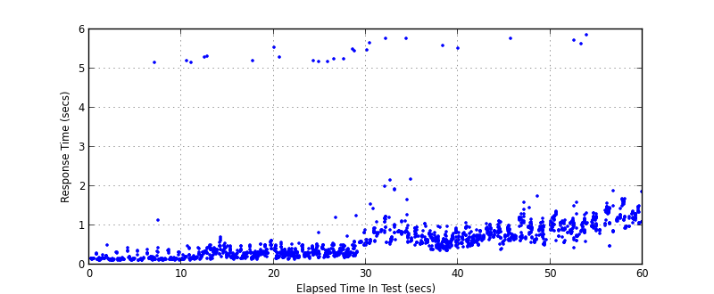

Performance Results Report
Summary
transactions: 1982
errors: 0
run time: 60 secs
rampup: 60 secs
test start: 2013-05-13 20:57:48
test finish: 2013-05-13 20:58:48
time-series interval: 10 secs
workload configuration:
| group name | threads | script name |
|---|
| user_group-1 | 10 | getBalance.py |
| user_group-2 | 10 | deposit.py |
| user_group-3 | 10 | debit.py |
| user_group-4 | 10 | getTransactionLog.py |
All Transactions
Transaction Response Summary (secs)
| count | min | avg | 80pct | 90pct | 95pct | max | stdev |
|---|
| 1982 | 0.109 | 0.664 | 0.950 | 1.167 | 1.350 | 5.869 | 0.662 |
Interval Details (secs)
| interval | count | rate | min | avg | 80pct | 90pct | 95pct | max | stdev |
|---|
| 1 | 208 | 20.80 | 0.109 | 0.202 | 0.193 | 0.290 | 0.350 | 5.162 | 0.359 |
| 2 | 324 | 32.40 | 0.124 | 0.393 | 0.399 | 0.479 | 0.516 | 5.553 | 0.684 |
| 3 | 389 | 38.90 | 0.141 | 0.456 | 0.473 | 0.547 | 0.591 | 5.503 | 0.761 |
| 4 | 329 | 32.90 | 0.366 | 0.805 | 0.865 | 1.010 | 1.222 | 5.770 | 0.657 |
| 5 | 367 | 36.70 | 0.379 | 0.815 | 0.961 | 1.052 | 1.142 | 5.764 | 0.324 |
| 6 | 325 | 32.50 | 0.421 | 1.169 | 1.346 | 1.480 | 1.620 | 5.869 | 0.510 |
Graphs
Response Time: 10 sec time-series
Response Time: raw data (all points)

Throughput: 5 sec time-series